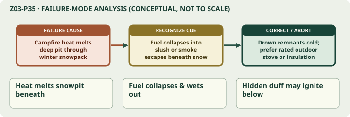

Z03-P35 · Fire and ignition · Adapted historical material
Recognize why snow platforms melt and destabilize winter fires
Understand how winter snowpack melts beneath heat, soaking fires and exposing hidden dry forest duff underneath.
When it applies · Authorized winter campfires built where deep snow covers the forest floor.
Equipment · Lawful fire authorization, heat-safe stove alternative if snow is deep, extinguishing water and stirring tool.

Actions
- Recognize that snow is NOT a reliable fireproof floor—heat rapidly melts a deep pit straight down through snowpack, dumping water onto embers while collapsing the fuel stack sideways.[C02, C03, ED]
- Recognize the opposite winter trap: once a fire melts down to ground level beneath snow, dry protected forest duff and roots underneath can ignite out of sight beneath overhanging snow shelves.[C14, C04, ED]
- Prefer a rated outdoor winter stove on a stable insulated base (such as a stove board per manufacturer guidance) over trying to maintain an open wood fire in deep winter snow.[C15, C17, ED]
Failure recognition · Lighting a small emergency fire directly on soft winter snow, watching it sink two feet into wet slush and exhaust the group's dry tinder.[C03, C08, ED]
Verify · Confirm winter heat/boiling relies on a stable outdoor stove or an authorized cleared mineral-soil ring with full cold-ash verification.[C15, C14, C04, ED]
Stop or change course · If melting snow collapses the fire bed or steam/smoke escapes beneath snowbanks, drown the remnants cold and shift to stove or no-fire insulation.[C04, C08, C15]
Evidence and editorial notes
- C02 · USDA Forest Service / Smokey Bear · Smokey Bear’s Campfire Safety Guide (agency PDF)
- Section: Build your campfire; choose a location · Conditions: Where campfires are currently permitted
Support: Use an established fire ring where required or available. Protect the area from nearby combustible materials, avoid windy conditions and keep water ready.
Limitations: Site clearances vary by fuel load, slope, and wind; no universal safe radius fits all terrain. · Conflicting evidence: None; aligns with USFS-FIRE.
Editorial note: Grounds site-selection and ring-preparation procedures. · Specialist reviewer: Fire prevention and land management
Primary source · checked 2026-11-24 - C03 · USDA Forest Service / Smokey Bear · Smokey Bear’s Campfire Safety Guide (agency PDF)
- Section: Build your campfire > Tinder, kindling, fuel · Conditions: Outdoor authorized campfire
Support: Dry tinder, small kindling and larger fuel serve different roles. Gather materials before ignition. Avoid accelerants.
Limitations: Species availability and moisture content vary by season and local collection rules. · Conflicting evidence: None; separates material function from unverified species claims.
Editorial note: Used to stage three-tier fuel geometry without prescribing specific live trees. · Specialist reviewer: Fire prevention
Primary source · checked 2026-11-24 - C04 · USDA Forest Service / Smokey Bear · Smokey Bear’s Campfire Safety Guide (agency PDF)
- Section: Maintain and extinguish a campfire · Conditions: Occupied campfire, water and tools available
Support: Stay with the fire. Drown, stir and add water again until cool. Leaving visible embers or merely covering them is unsafe.
Limitations: Deep duff or peat soils can hold smoldering embers underground even after surface ash cools. · Conflicting evidence: None; prohibits dirt-only burial as primary extinguishment.
Editorial note: Enforces drown-stir-feel-cold cycle before site departure. · Specialist reviewer: Fire prevention and land management
Primary source · checked 2026-11-24 - C08 · NWS · What To Do If You're Caught in a Winter Storm (current web edition)
- Section: Outside > If there is no shelter nearby · Conditions: Stranded outdoors during a winter storm
Support: Seek shelter and block wind and wet exposure. Reduce heat loss from contact with snow or ground.
Limitations: Does not guarantee overnight survival without adequate insulation or rescue. · Conflicting evidence: None; reinforces no-fire exposure control priority.
Editorial note: Anchors no-fire fallback when ignition fails or is banned. · Specialist reviewer: Cold-weather shelter specialist
Primary source · checked 2026-11-24 - C14 · USDA Forest Service · Know Before You Go: Fire (current web edition)
- Section: Know Before You Go > Extinguish and Site Clearance · Conditions: Authorized outdoor campfire on mineral soil
Support: Clear flammable grass, needles, and twigs down to mineral soil before building a small fire, keep flames away from overhanging branches, and confirm cold ash before leaving.
Limitations: Root systems and organic duff beneath shallow clearing can ignite invisibly. · Conflicting evidence: None; aligns with SMOKEY C02/C04.
Editorial note: Underpins mineral-soil cutaway and underground root-fire failure cards. · Specialist reviewer: Wildland fire prevention
Primary source · checked 2026-11-24 - C15 · NPS · Wildland Fire Safety (current web edition)
- Section: Wildland Fire Safety > Campfires and Stoves · Conditions: Outdoor cooking with portable liquid or canister stoves
Support: Operate stoves on level cleared ground away from tents and dry fuels, cool completely before refueling, and move away from any spilled fuel before lighting.
Limitations: Fuel canisters behave differently in cold weather and high elevation; follow manufacturer limits. · Conflicting evidence: None; aligns with CPSC-C and USFS-FIRE.
Editorial note: Governs stove setup, refueling isolation, and spill failure recognition. · Specialist reviewer: Portable appliance safety and fire prevention
Primary source · checked 2026-11-24 - C17 · NPS · Leave No Trace Seven Principles (current web edition)
- Section: Principle 5 > Minimize Campfire Impacts · Conditions: Permitted backcountry sites where wood fires are allowed
Support: Where fires are permitted, keep fires small, use only dead and downed wood gathered lawfully, burn wood completely to ash, and use a camp stove where wood is scarce or impacts are high.
Limitations: Some parks prohibit all wood gathering or open fires regardless of deadfall availability. · Conflicting evidence: None; balances lawful fuel collection with habitat protection.
Editorial note: Guides lawful fuel gathering and small-fire thermal management. · Specialist reviewer: Land management and fire prevention
Primary source · checked 2026-11-24
Source lineage · B012 P19 winter fire and Smokey Bear guide; adapted historical material · Classification · Adapted historical material.